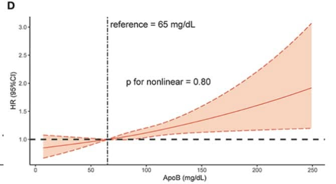

When a new study makes headlines, the most useful first question is not "what did it find?" but "what kind of study is it?" The group's admins, especially Louis Nervegna, repeatedly make this point: the design of a study determines what it can and cannot prove, and weak designs are often used to argue against strong ones.12
In the admins' view, randomized controlled trials (RCTs) and long prospective cohort studies sit at the top of the evidence hierarchy in medicine, with RCTs able to prove causality and cohorts able to follow people for decades.1 Mendelian randomization (genetic studies) adds a third line of evidence about lifelong effects. Case series, cross-sectional surveys and ecological (country-level) comparisons sit near the bottom.345
This article explains each design in plain language, shows how the group has applied them to real questions about cholesterol, diet, supplements and drugs, and flags where the admins disagree or where the evidence is mixed. It is a summary of group discussion, not medical advice; the admins recommend discussing decisions with your own doctor.
Why study design matters
Most claims in health groups boil down to "study X found Y." But a study that finds an association is very different from one that shows a cause. Louis sums up the problem this way: observational studies can only show associations, and those associations are often created by confounding or reverse causality rather than a true causal effect.11
Two terms come up constantly:
- Confounding means a third factor explains the link. For example, people who get a shingles vaccine may simply take better care of their health in general, which could lower their cardiovascular risk regardless of the vaccine.9 Gokhan Can raises a similar point about nutrition research: foods labeled "unhealthy" tend to be cheaper and more convenient, so their consumption may track with limited time, resources or access to fresh food, which independently affect health.13
- Reverse causality means the outcome (or an early stage of it) changes the exposure, not the other way around. Gokhan's example is that people with insulin resistance might gravitate toward protein- and fat-rich foods, rather than those foods causing the problem.13
Because of these problems, the admins urge readers to ask one question first when someone posts a study: where does it fall on the hierarchy?214 Louis calls it a common technique to cite studies from the bottom of the hierarchy to try to refute studies at the top.12

The main study designs
Randomized controlled trials (RCTs)
In an RCT, participants are assigned by chance to an intervention or a control, which balances known and unknown differences between groups. That is why Louis describes large, long-running RCTs as the highest quality evidence and the only design that can directly prove causality.1015
Examples the group relies on:
- A May 2024 meta-analysis of the four large Mediterranean-diet RCTs (Lyon Diet Heart Study, Indo-Mediterranean Diet Heart Study, PREDIMED and CORDIOPREV; 10,054 participants, average age 57, follow-up of 2 to 7 years) found lower rates of major cardiovascular events against control diets similar to American Heart Association recommendations of the time.10
- Six randomized diet trials have shown plaque reversal (Lifestyle Heart, STARS, SCRIP, PREDIMED, CORDIOPREV and DISCO), all primarily plant-based but none strictly vegan.15
- Every large randomized trial of HDL-raising drugs failed to reduce heart attacks and strokes, which Louis uses to show why a marker that tracks with risk is not automatically a target.1216
RCTs have limits. Louis notes that statin RCTs usually last about 5 years and that it is impractical to run RCTs much longer than that.67 They also test one intervention in one population, so the result depends on who was enrolled and for how long.
Prospective cohort studies
A prospective cohort study follows a group of people forward in time and records what happens. Louis explains that these studies track people continuously over time before they develop disease, and that they can run for decades.15 The Framingham Heart Study is the example Louis gives of a prospective cohort that produced some of the most reliable knowledge in cardiology.7
The trade-off is that cohorts cannot show causality on their own. Louis puts it plainly: they run much longer than RCTs, but they cannot prove cause.17 He therefore argues that a combination is best: RCTs for causality, prospective cohorts for the long term.1
Mendelian randomization (MR)
MR uses genetic variants, which are assigned at conception, as a natural experiment. Posts in the group describe it as nature running randomized trials over a lifetime: people who inherit variants that lower LDL stay at lower LDL for life, and their rates of heart disease are compared with those who do not.1819
What the group takes from MR:
- A chart from a European Atherosclerosis Society consensus statement shows that variants acting through different pathways (LDLR, PCSK9, APOB, HMGCR, NPC1L1, SORT1, ABCG5/8) change coronary risk in proportion to how much they change LDL, the same linear relationship seen in statin trials.18
- Louis combines RCTs, cohorts and MR in one graph: a 39 mg/dL LDL reduction was associated with over 20% lower heart attack risk at 5 years (RCTs), over 30% at 12 years (cohorts) and over 50% at 52 years (MR).620 The extension to absolute lifetime risk is Louis's own extrapolation.6
- MR studies track lifelong exposure, which helps explain findings that short trials miss. A million-person MR study found that statin-like (HMGCR) and ezetimibe-like (NPC1L1) variants were linked to 76% and 82% lower dementia risk per roughly 40 mg/dL drop in non-HDL cholesterol, whereas PCSK9-related variants showed no benefit.1921 Short RCTs, by contrast, show no cognitive harm or benefit.21
- MR can also challenge observational links. A 2024 MR study found no association between genetically predicted VO2-max and longevity or diabetes, even though VO2-max is linked to lower mortality in observational studies; Louis reads this as reverse causality or confounding.22

Limits of MR. Louis stresses that MR is fundamentally observational: it can hint at causality, generally better than other observational designs, but only RCTs can definitively prove it.23 It works well for things genes directly control, such as LDL or familial hypercholesterolemia, and poorly for behaviors like drinking alcohol, because no gene forces someone to drink, and variants such as ALDH2 can alter other behaviors and cluster in certain ethnic groups.23 He also notes that MR gives a lifetime average and cannot distinguish moderate daily drinking from binge drinking.23
Meta-analyses
A meta-analysis pools the results of many studies. The key lesson from the group is to look at what was pooled.
- Meta-analyses of RCTs are strong. A Cholesterol Treatment Trialists' analysis of 27 statin RCTs found similar proportional reductions in major vascular events per 1 mmol/L LDL reduction in women (rate ratio 0.84) and men (0.78).24 Meta-analyses of statin RCTs also found no effect on cancer incidence or mortality: odds ratio 0.99 in a 2023 analysis of 35 trials, and relative risk 0.97 in a 2017 analysis of 21 trials.1725
- Meta-analyses of observational studies inherit the weaknesses of their parts. Statin use was associated with 20% lower dementia risk across 36 studies (OR 0.80) and 32% lower Alzheimer's risk across 21 studies; the authors called for dedicated randomized trials.26 A later analysis of 55 studies and about 7 million people reported 14% lower all-cause dementia, but Louis corrected the sharing account that called these clinical trials: they were cohort and case-control studies.27 He still finds the large pooled size compelling.27
- Dose-response cohort meta-analyses estimate trends. A 17-cohort analysis of 896,871 people linked each daily yogurt serving to about 7% lower all-cause and 14% lower cardiovascular mortality, with most benefit at about 0.5 servings per day; it shows association, not causation.28
- Meta-analyses can show nothing or harm. A review of 884 supplement RCTs found benefits for omega-3, folic acid and CoQ10 but no effect of vitamins C, D, E or selenium on cardiovascular disease, and beta-carotene increased all-cause mortality (RR 1.10).29
Show data
| Relative risk (log scale) | 95% CI | |
|---|---|---|
| Omega-3: cardiovascular death | 0.93 | 0.88–0.97 |
| Omega-3: heart attack | 0.85 | 0.78–0.92 |
| Folic acid: stroke | 0.84 | 0.72–0.97 |
| CoQ10: death from any cause | 0.68 | 0.49–0.94 |
| *Beta-carotene: death from any cause | 1.10 | 1.05–1.15 |
Inside meta-analyses, check consistency. In the four-trial Mediterranean-diet analysis, the I2 statistic (a measure of how much trials disagree) was 87% for the composite of major cardiovascular events, and the reductions in all-cause mortality (OR 0.77) and revascularization did not reach statistical significance.10 A headline such as "48% fewer events" hides these details.30
Case series, cross-sectional and ecological studies
Louis places these designs at the bottom of the hierarchy.
- Case series. He describes Esselstyn's published results as case-based observational studies in heavily medicated patients, mostly on statins, with no randomized trial of the diet.3
- Cross-sectional studies. A study that looks at one snapshot in time is useful at best for generating hypotheses, as with an NHANES analysis of ketogenic diets of 43,776 adults.5
- Ecological studies. A country-level analysis linking higher sodium intake with longer life expectancy shows that the country lives longer as a whole, not that individuals who eat more salt live longer, which Louis calls the ecological fallacy.4 He argues these are for hypothesis generation only and should not be lumped together with prospective cohorts.4
In short, as the group describes them:
| Design | What it can show | Main limits | Example from the group |
|---|---|---|---|
| Randomized controlled trial | Cause and effect1015 | Usually about 5 years; one intervention in one population67 | Four Mediterranean-diet RCTs, 10,054 participants10 |
| Prospective cohort | Associations over decades15 | Cannot prove cause on its own17 | Framingham Heart Study7 |
| Mendelian randomization | Lifelong effects of traits genes control, such as LDL1823 | Observational; poor for behaviors such as drinking23 | Statin-like and ezetimibe-like variants and dementia19 |
| Meta-analysis | A pooled estimate across studies | Only as strong as what was pooled; check consistency1027 | 27 statin RCTs, women and men24 |
| Case series, cross-sectional, ecological | Hypotheses45 | No individual cause and effect; ecological fallacy4 | Esselstyn's case series, an NHANES keto snapshot, country-level sodium345 |
Common traps when reading headlines
U-shaped curves and reverse causality
Observational data often show higher mortality at both low and high LDL. Louis points out that similar U-shapes appear for BMI, A1C and blood pressure, where illness itself pushes the number down: cancer lowers LDL and BMI, liver and kidney disease lower A1C, and uncontrolled diabetes lowers blood pressure.31 For cancer, Louis cites a Circulation review: cholesterol falls faster before a cancer is diagnosed, statin RCTs show no increase in cancer, and MR (average 52 years of exposure) finds no extra cancer in people with genetically lower cholesterol.8 A 2022 cohort of about 36,500 people in China found that a U-shaped ApoB-mortality curve became linear after adjusting for comorbidities, bilirubin and malnutrition.32


Big relative numbers from observational data
Several posts show how dramatic percentages can mislead:
- A shingles-vaccine study reported 46% fewer major cardiac events and 66% fewer deaths within a year in over 246,000 people with atherosclerotic heart disease, but Louis stresses it shows association, not causation.9
- Long-term melatonin use was linked to about 90% higher odds of heart failure in over 130,000 adults with insomnia; Louis notes this is retrospective and could reflect confounding or reverse causality.33
- A new Swedish cohort linked full-fat cheese and cream (but not low-fat versions, butter or milk) to lower dementia risk. Louis urges caution: it is the first such report, and the longer, larger Harvard Nurses Study has not reported it.11
- In an Israeli observational study, risks reported for women starting hormone therapy at ages 50 to 65 (cancer +749%, stroke +1,569%) were larger than for those starting after 65, which an oncologist cited by Louis called implausible and a reason one study should not override decades of better evidence.34
Observational analyses of RCTs
Louis warns that influencers sometimes cite an RCT when they are really citing an ad hoc observational (post hoc) analysis done after the trial ended. He says such analyses cannot prove causality and must be weighed against all observational research.35 He applies the same caveat to the finding that PREDIMED nut eaters had about 40% lower total and cancer mortality in under 5 years, noting it "can't prove causality, but it can strongly hint at it."36
The metformin dementia analysis shows both sides. An observational follow-up of the Diabetes Prevention Program trial and its follow-up study reported over 50% lower dementia risk with metformin; it benefits from initial randomization, but after 3.2 years the study became open-label and many in the former placebo group later received metformin, blurring the comparison, and the finding is not conclusive.37
Surrogate markers versus hard outcomes
Many meta-analyses measure risk markers rather than events. Oats lowered LDL by 0.29 mmol/L across 74 RCTs, but apoB did not change significantly, based on only 2 studies.38 A berberine meta-analysis of 18 RCTs found small reductions in LDL, triglycerides and ApoB, and the authors called for trials with clinical outcomes.39 Statins lowered hs-CRP by about 1 mg/L across 26 RCTs.40 The HDL story is the cautionary tale: higher HDL tracks with lower risk in observational data, yet HDL-raising drugs have failed, and genes raising HDL do not lower lifetime risk.1216
Where the admins' views differ or evidence is mixed
- How much to trust epidemiology. Gokhan argues that observational nutrition studies can be distorted by reverse causation and socioeconomic confounding and that intervention trials resolve this.13 Louis trusts prospective cohorts highly, ranking them at the top alongside RCTs.1 The two are not opposites, but emphasis differs.
- Do you need RCTs at all? Louis argues that reliable knowledge does not require long RCTs: no human RCT showed that smoking causes lung cancer or that trans fats cause heart disease. Causality was established by combining prospective cohorts, short-term biomarker RCTs and animal mechanism studies, judged with Bradford-Hill criteria.7 Yet his personal rule is to not bet his life on anything not proven in multiple high-quality RCTs, and to add less-proven measures on top of standard care.41
- Conflicting evidence on the same question. On ACE inhibitors versus ARBs, a 2012 meta-analysis of 20 RCTs reported lower all-cause mortality with ACE inhibitors (HR 0.90) but not ARBs (HR 0.99), nine head-to-head RCTs found no difference (RR 0.98), and a target trial emulation reported higher mortality with ACE inhibitors (HR 1.13). The post concludes the question remains genuinely unsettled.42
- Time horizon. Short trials may understate benefits that build over decades, so MR and cohort results can differ from RCTs without either being wrong.619
Show data
| Hazard ratio (log scale) | 95% CI | |
|---|---|---|
| ACE inhibitors | 0.90 | 0.84–0.97 |
| ARBs | 0.99 | 0.94–1.04 |
What this means for you
- Identify the design first. Gokhan's lists tag each claim as [RCT] or [Association], a habit worth copying.43 The same list shows flu vaccination claims drawn from both RCTs and cohorts, with the post flagging observational limits.44
- Treat observational headlines with big percentages as hypotheses, and look for replication.911
- Prefer evidence from multiple high-quality RCTs for important decisions, as Louis does, and add less-proven measures on top of standard care, not instead of it.41
- Check the age and the reference of what is cited. Louis says an influencer who can only cite studies from the 1960s and 1970s is ignoring 50 years of research, and that most people never look up cited references.35
- Check whether the endpoint is a marker or a hard outcome such as heart attack, stroke or death.1239
- Look at what a meta-analysis pooled, how consistent the trials were and which outcomes were not significant.1027
- Be skeptical of MR for foods and drinks, and comfortable with it for biology genes control directly.1823
- Discuss any treatment decision with your doctor.
Frequently asked questions
Does "observational" mean "wrong"?
No. Prospective cohorts are ranked at the top of the hierarchy by Louis and are the source of major cardiology knowledge, such as the Framingham Heart Study.17 The concern is the lower designs, and the fact that associations may reflect confounding or reverse causality.11
Is a meta-analysis always better than a single study?
Not automatically. A meta-analysis of RCTs is strong, but a meta-analysis of observational studies is still observational, as in the statin and dementia example.2627 Heterogeneity and non-significant outcomes also matter.10
Why do RCTs and genetic studies sometimes give different sizes of effect?
RCTs typically last about 5 years and start in late adulthood, while MR reflects lifelong exposure, so the effects can look much larger.619
Can Mendelian randomization prove cause and effect?
Louis says no: it is observational and only hints at causality, though more convincingly than ordinary observational studies, particularly for traits genes directly control.23
Why do people cite a study that seems to contradict an RCT?
Louis says it is a common tactic to cite low-tier studies, such as ecological or cross-sectional ones, to refute top-tier evidence, which is why he asks where the study falls on the hierarchy.245